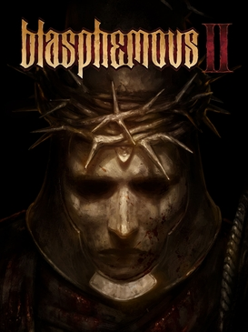

Wiki informativa
Blasphemous 2 es un videojuego de accion y plataformas de estética pixel-art, desarrollado por The Game Kitchen y distribuido por Team17 . Fue lanzado el 24 de agosto de 2023 para Nintendo Switch, PC, PlayStation 5 y PlayStation 4 y Xbox Series X y Xbox Series S y Xbox One.
